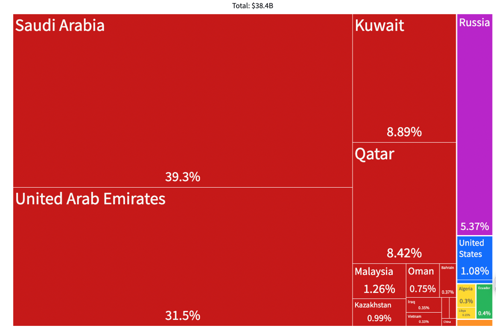
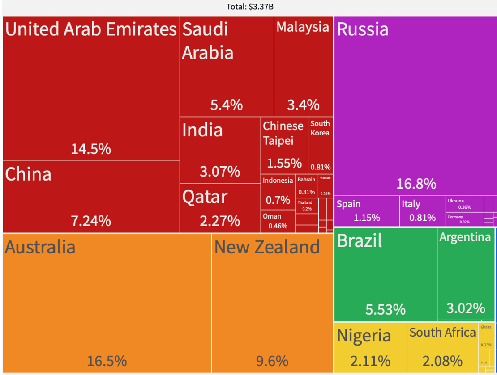

Connecting Mineral and Metal Imports to Authoritarianism
01/06 2023
Author: David D. Sussaman
These examples, as well as those of other materials, show how trade in resources from one country to another can affect the environment, while also being tied to authoritarian regimes. This briefing utilizes the Observatory of Economic Complexity (OEC)[1] to suggest that Japan (as is the case with other industrialized countries) needs to remain vigilant in terms of its sourcing of energy and minerals. A New York Times report in October of this year noted that Japan’s volume of trade with Russia actually increased 13% after the invasion of Ukraine, with exports down 42% but imports up 40% (Gamio and Swanson 2022). It may be easier to find alternative markets in which to sell products, though the raw materials that Russia exports are more challenging to replace.
Oil is often associated with less than democratic governments, and Japanese imports of petroleum are no exception. In 2020 crude petroleum represented 6.6% of the value of all imports into Japan, the largest single category among the World Customs Organization’s 4-digit harmonized systems codes for products.

As Figure 1 shows, the petroleum sourced from Russia is not insignificant, making up more than 5% of Japan’s imports of that energy source. By June of this year, S&P Global Commodity Insights reported that Japan stopped importing Russian crude altogether (Kumagai 2022). This is an important step in cutting off financial flows to the authoritarian regime in Moscow, but a further story here has to do with the origin of energy from other countries – what we see is a huge reliance on the Middle East and Asia, in countries which are not very democratic. Freedom House provides a global score to rank countries, in the year 2021, according to the political rights and civil liberties guaranteed to their citizens. Of 18 countries that export crude to Japan, the organization categorizes Saudi Arabia (39.3% of the petroleum), the United Arab Emirates (31.5%), Qatar (8.42%), Russia (5.37%), Kazakhstan (0.99%), Oman (0.75%), Bahrain (0.37%), Iraq (0.35%), Vietnam (0.33%), Algeria (0.3%), Brunei (0.1%), Azerbaijan (0.095%), and China (0.076%) as “not free”, and Kuwait (8.89%) and Malaysia (1.26%) as “partly free”. Only the United States (1.08%), Ecuador (0.4%), and Australia (0.18%) are classified as “free”, accounting for merely 1.66% of Japan’s crude petroleum imports.
Another essential material, aluminum, is not mined within Japan, and yet is key for green technologies. Among metals, Japan’s largest import by value is raw aluminum, at 3.37 billion USD, or .58% of all its imports in 2020.

What additional observations can be drawn from Figure 2 above, showing the origins of raw aluminum imported into Japan? In 2020 there was a great reliance on Russia, as the largest exporter (16.8%) of the material. Even if this source is reduced, the remaining countries are, according to Freedom House, a mixture of "free", such as Australia (16.5%) and New Zealand (9.6%), and "not free", such as the United Arab Emirates (14.5%), China (7.24%) and Saudi Arabia (5.4%). The more diverse supply chain for aluminum imports shows that Japan’s reliance is truly global – nearly 10% from South America, and another 4.5% from Africa. It also gives hope that the sourcing from more democratic countries can be increased.
Our trade and use of natural resources clearly has environmental implications. Fossil fuels are no longer viable in a world where climate change is a reality. At the same time, there is no such thing as "sustainable mining", despite how the industry may wish to promote itself. One solution includes the rapid expansion of renewable energy in place of crude petroleum, and when it comes to aluminum, we need efficiency and the creation of as circular an economy as possible.
All of this is not written as a critique of Japan, but rather, a recognition of the complications of materials and where they are sourced from. Beyond the environmental implications, we find social and political concerns in terms of the types of governments supported by this trade. Imports from (not to mention exports to) authoritarian rulers help to prop them up. Japan is not alone in its material bind. Korea, for example, also imports petroleum from similar countries, with a significant percentage drawn from those that are “not free”. However, a relatively larger amount of it is sourced from “free” countries, at 16.44% total. As of 2020 the United States still received 1.3% of its crude from Russia, with the vast majority, 60.4% from Canada (democratic, though known for its highly polluting tar sands). Consideration of the way energy and mineral resources are connected to authoritarian regimes should not be overlooked.
Footnote
[1] The Observatory of Economic Complexity (OEC), originating out of the MIT Media Lab, graphically represents the 4-digit Harmonized System codes assigned by the World Customs Organization for imported and exported products.References
Freedom House. 2022. "Global Freedom Scores".
Gamio, Lazaro and Ana Swanson. 2022. ‘’ How Russia Pays for War”, New York Times, 30 October.
Kumagai, Takeo. 2022. " Japan's Russian crude oil imports fall to zero in June", S&P Global Commodity Insights. 22 July.
Observatory of Economic Complexity (OEC). 2022.